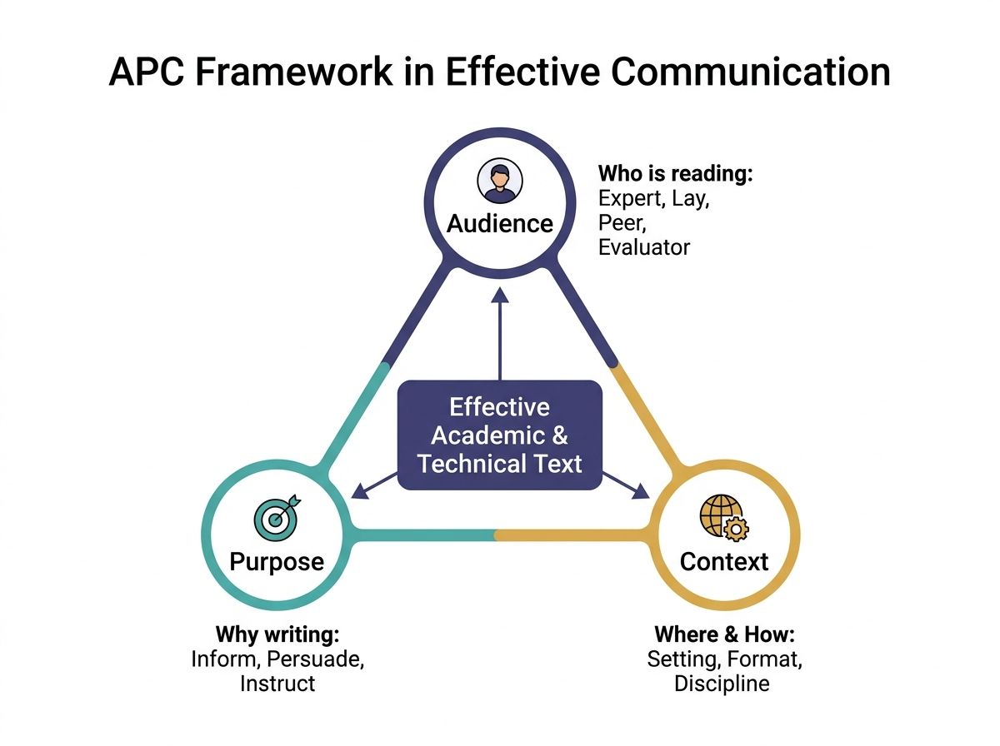
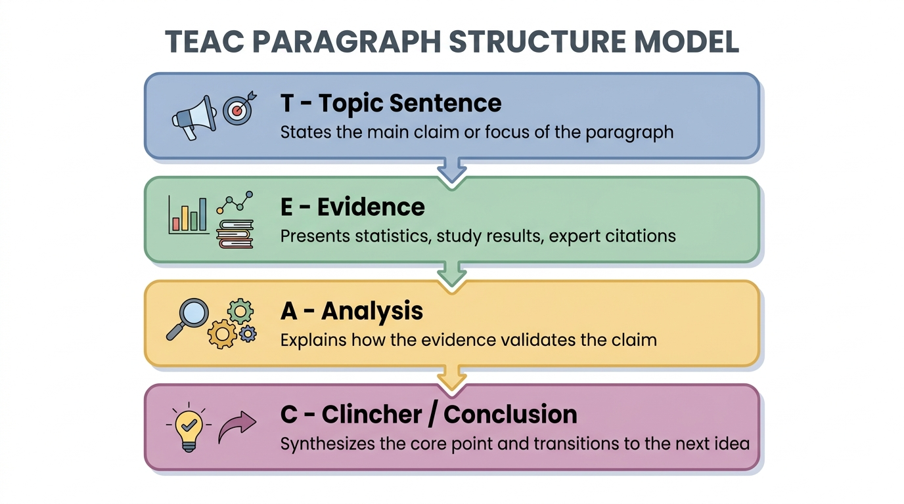
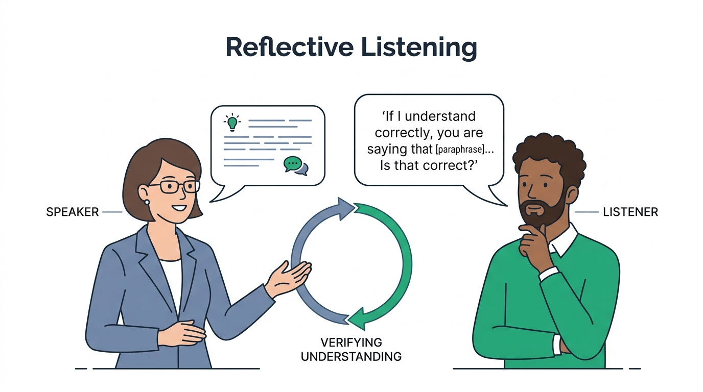
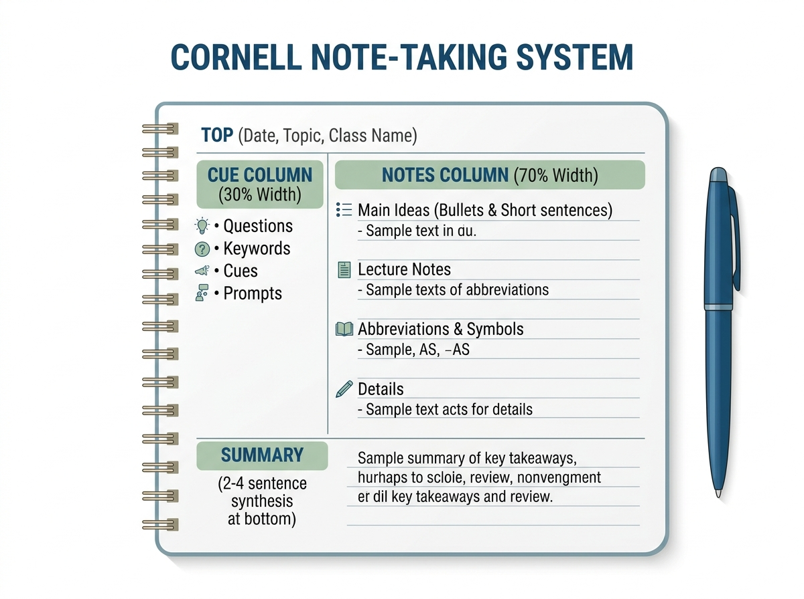

Interpreting Meaning in Spoken, Written, and Multimodal Academic and Technical Texts
Master the exact foundational principles for your First Long Quiz: the distinct nature and 6 core characteristics of scholarly vs. technical communication, the APC communication framework, and critical interpretation strategies across reading, listening, and viewing.

Nature & 6 Characteristics
Academic vs. Technical definitions, goals, and the 6 foundational writing rules.
The APC Framework
Audience (4 types), Purpose (3 goals), and Context (3 dimensions).
Critical Strategies
Reading (SQ5R, TEAC), Listening (Cornell, Reflective), and Viewing (Integrity).
Module 1: Nature & Characteristics of Academic and Technical Writing
Both genres sit under the shared umbrella of formal, informative communication, but diverge in primary audience, structural layout, and ultimate communicative intent.
Academic Texts
Scholarly FocusFormal, structured, linear, and evidence-based writing used in scholarly settings to analyze ideas, construct arguments, or build knowledge for academic evaluators and readers.
Technical Texts
Practical FocusFunctional, practical, and highly precise writing designed to instruct, direct, or document procedures so readers can perform tasks safely, efficiently, and accurately.
The 6 Core Characteristics of Academic & Technical Texts
These six principles are universally tested on exam day. Toggle the interactive examples on each card to test your understanding.
Evidence-Based / Objective
Arguments, claims, and conclusions presented in academic and technical contexts must always be supported by empirical data, reputable facts, expert insights, or primary observations. At the same time, the writing puts more emphasis on information and arguments and less on personal feelings or perspectives of the writer, focusing entirely on the subject matter.
Key Indicators
- Inclusion of survey results, laboratory data, statistics, and verifiable facts.
- Consistent use of standardized in-text citations (e.g., APA, MLA) and complete reference lists.
- Minimizing or eliminating first-person subjective expressions (e.g., "I think", "I feel", "in my opinion") in favor of objective phrasing.
Structured
Text must follow a predictable, logical, and standardized organizational pattern. This structure serves as a roadmap that guides the reader seamlessly through complex ideas without unnecessary digressions or scatter.
Key Indicators
- Tripartite Structure for Essays: Clear Introduction (hook, background, thesis statement), Body (evidence and analysis), and Conclusion (thesis restatement, summary, clincher).
- Modular / Hierarchical Setup for Technical Texts: Numbered sequential steps, bulleted lists, and explicit subheadings.
2. Methodology: Samples were inoculated into standardized petri dishes (Batch 4) and incubated at 37°C.
3. Results & Discussion: While initial colony growth was rapid, antibiotic application yielded a 42% mortality rate."
Critical
Academic writing requires analytical and evaluative thinking. Writers must not merely describe or summarize information; they must develop clear, logical arguments, create depth, avoid stating the obvious, and uncover underlying insights.
Key Indicators
- Analyzing why and how a phenomenon occurs rather than just summarizing what happened.
- Identifying gaps, limitations, or contradictions in existing literature.
- Evaluating the validity, credibility, and relevance of sources before integrating them into an argument.
Balanced
Academic writing aims to consider different perspectives or arguments on an issue or topic to avoid being biased or one-sided. Writers exercise caution when making claims or conclusions to avoid making sweeping generalizations or unfounded statements.
Key Indicators & Hedging Toolkit
- Acknowledging counterarguments, alternative explanations, or study limitations.
- Modal Verbs: may, suggest, appear, seem, could.
- Probability Adverbs: likely, possibly, presumably, generally, relatively.
- Tentative Phrases: "the data imply that...", "results indicate a potential correlation...".
Precise
Strives to provide clear, accurate, and correct information that clearly captures what the data show. Vague descriptors create ambiguity, lead to costly errors, or render scientific procedures non-replicable.
Key Indicators
- Using exact language and specific terms (e.g., specifying "increased by 15%" or "decreased" instead of merely saying the values "changed").
- Quantifying observations with exact measurements, units, percentages, and statistical values rather than vague modifiers like "a lot" or "huge".
Formal
Academic writing observes formal conventions of writing. Adhering to formal language and tone maintains professionalism, establishes authority, and ensures respect across scholarly and technical communities.
Key Indicators
- Zero Colloquialisms, Figures of Speech, or Slang: Avoiding casual expressions (e.g., "cool", "gonna", "trash", "freaked out").
- No Contractions: Spelling out words completely (e.g., writing "cannot", "did not", "would have" instead of "can't", "didn't", "would've").
- Standard Mechanics: Observing proper capitalization, punctuation, subject-verb agreement, and rigorous citation formatting.
Module 2: The APC Framework (Audience, Purpose, Context)
Considering Audience, Purpose, and Context is a fundamental law of communication applying across every single register—from an email to a formal research paper or workplace technical report.
The APC Triad
Click the diagram to view in high resolution.

1. Audience: The 4 Distinct Target Groups
Understanding who will read your text dictates the required level of detail, technical depth, tone, and vocabulary. Select an audience to see the tailored writing strategy:
2. Purpose: The 3 Intended Outcomes
Purpose defines the intended goal or outcome of your text, determining structure, emphasis, and strategy:
- To Inform / Explain: Present objective facts, methodologies, or mechanisms without bias.
- To Persuade / Argue: Convince the reader of a thesis using sound claims and empirical evidence.
- To Instruct / Direct: Guide procedural human action safely, step-by-step, toward a goal.
3. Context: The 3 Boundary Conditions
Context encompasses surrounding circumstances, medium, environment, and discipline constraints:
- Physical / Digital Setting: Classroom, laboratory, professional conference, or online database.
- Medium & Format: Print journal, slide presentation, PDF report, or web infographic.
- Discipline Expectations: Humanities prioritize argumentative critique and textual evidence; Sciences focus on methodology and replicable data.
Module 3: Critical Strategies for Interpreting Texts
Critical interpretation moves beyond passive consumption. It demands active analytical engagement across reading, listening, and viewing modalities.
A. Critical Reading Strategies (3 Sequential Stages)
Critical reading involves active analysis, interpretation, and evaluation of how an author constructs an argument.
Stage 1: Pre-Reading Strategies

Stage 2: During-Reading Strategies

Interactive TEAC Paragraph Breakdown (Click each element):
Stage 3: Post-Reading Strategies
- Double-Entry Journaling: A two-column graphic organizer that explicitly separates direct text citations/evidence (left column) from personal reflections, critiques, and analytical connections (right column).
- Hierarchical Outlining: Deconstructing a reading into a structured alphanumeric (I, A, 1, a) or indented bulleted format to lay bare the author's logical progression.
- Summarizing: Restating the core thesis and main supporting arguments strictly in your own words while eliminating minor anecdotes, redundant examples, and decorative phrasing.
B. Critical Listening Strategies
Evaluating spoken academic arguments, detecting unstated assumptions, and ensuring message fidelity.
1. Active Listening
Focuses full cognitive attention on the speaker, filtering out internal/external distractions and withholding hasty judgments until the message is fully communicated.
- Paying Attention: Total focus on verbal cues, vocal cadence, and nonverbal body language.
- Evaluating: Analyzing logical soundness and verifying empirical backing of claims.
- Responding Thoughtfully: Formulating questions grounded in facts rather than immediate emotional reactivity.
2. Reflective Listening
Paraphrasing or restating the speaker's core message back to them to confirm accurate interpretation before advancing the dialogue.

3. The Cornell Note-Taking System
A time-tested, structured layout designed to facilitate active note-taking during lectures and seamless self-quizzing during study review.

Formulated immediately after the lecture. Contains keywords, review prompts, and potential exam questions.
Recorded during the lecture. Contains main lecture ideas, abbreviations, bullet points, and data.
Written during post-lecture review. A 2–4 sentence synthesis summarizing the entire page's core takeaways.
C. Critical Viewing Strategies
Empowering learners to decode, analyze, and evaluate multimodal visuals (charts, infographics, diagrams, and videos) to detect bias, identify manipulated data, and verify claims.
1. Visual Grammar
Examining graphic hierarchy, color psychology, typography weight, and framing choices to determine what information the designer emphasized or minimized.
2. Scale Integrity
Scrutinizing chart axes. Ensuring the baseline starts at zero, intervals are uniform, and bar heights or pie slices accurately mirror numerical values without visual exaggeration.
3. Source Credibility
Checking dataset recency, verifying the primary publishing entity, evaluating sample representation, and checking for commercial or ideological sponsor conflicts.
⚡ High-Yield Exam Cram Sheet
Review these concise bullet points right before stepping into the exam room.
Academic vs Technical Texts
- Academic: Formal, structured, linear, evidence-based. Goal: inform, analyze, persuade using scholarly research. Examples: essays, theses, position papers.
- Technical: Functional, practical, highly precise. Goal: direct human action, explain process, document data. Examples: user manuals, SOPs, safety guides.
- Shared Umbrella: Both are formal, objective, informative communication.
The 6 Characteristics
- 1. Evidence-Based/Objective: Empirical data, citations (APA/MLA), no first-person feelings ("I think").
- 2. Structured: Logical roadmap. Tripartite for essays (Intro, Body, Conclusion); Modular for technical (numbered steps, bullets).
- 3. Critical: Depth over description; asking *why/how*, evaluating source credibility, finding literature gaps.
- 4. Balanced: Multi-perspective, avoids bias. Uses **hedging**: modal verbs (*may, suggest*), probability adverbs (*likely*), tentative phrases.
- 5. Precise: Exact data and terminology (use *increased/decreased* instead of *changed*); eliminates costly ambiguity.
- 6. Formal: Professional standard; zero slang/colloquialisms, zero contractions (*cannot* not *can't*), proper grammar mechanics.
The APC Framework
- Audience:
• Expert: Use jargon directly without defining basics.
• Lay / Non-Expert: Simplify terms, everyday analogies, define jargon immediately.
• Peer: Balance rigor with engaging, relatable tone.
• Academic Evaluator: Prove mastery, strict formatting, exhaustive citations. - Purpose: To Inform/Explain, To Persuade/Argue, To Instruct/Direct.
- Context: Physical/Digital Setting, Medium/Format, Discipline Expectations (Humanities vs Sciences).
Critical Strategies
- Reading Pre: Previewing (titles/abstracts) & SQ5R (Survey, Question, Read, Recite, Review).
- Reading During: Annotation & TEAC (Topic Sentence, Evidence, Analysis, Clincher).
- Reading Post: Double-Entry Journal (Evidence vs Reflection), Outlining, Summarizing.
- Listening: Active Listening (cognitive focus, facts over emotion), Reflective Listening (confirming with paraphrasing), Cornell Notes (30% Cue, 70% Notes, Bottom Summary).
- Viewing: Visual Grammar, Scale Integrity (zero baseline), Source Credibility.
Interactive Flashcards
Flip cards to test active recall. Use Space to flip and ← → arrows to navigate.
Academic Text
Click card or press Space to reveal definition
Formal, structured, linear, and evidence-based writing used in scholarly settings to analyze ideas, construct arguments, or build knowledge.
Comprehensive Practice Exam
25 scenario-based questions directly extracted from all 48 lecture slides. Immediate explanations provided for every option.
Great Job!
You have demonstrated high proficiency across the Effective Communication slides.
Interactive Study Tools
Hands-on interactive simulators to reinforce the Cornell Note-Taking layout, the TEAC paragraph builder, and data scale integrity.
Interactive Cornell Note Simulator
Active Learning ToolPractice the exact 30%-70%-Bottom Cornell layout. You can edit the text below, test yourself by hiding the notes column, or use the pre-loaded slide review notes!
Cue Column (30%)
• 6 Characteristics?
• What is Hedging?
• 4 Audience types?
• SQ5R steps?
• TEAC paragraph?
Notes Column (70%)
- Technical: Practical, guides human action, user manuals/SOPs.
- 6 Rules: Evidence-based (data), Structured (Tripartite/Modular), Critical (depth/why), Balanced (hedging: modal verbs), Precise (quantify numbers), Formal (no contractions/slang).
- APC: Audience dictates jargon; Purpose = inform/persuade/instruct; Context = setting/discipline.
- SQ5R: Survey, Question, Read, Recite, Review.
- TEAC: Topic Sentence, Evidence, Analysis, Clincher.
Summary Block (Bottom 2-3 Inches)
Scale Integrity Interactive Demo (Critical Viewing)
See why Slide 47 emphasizes Scale Integrity. Adjust the baseline slider below to observe how truncating the Y-axis turns a tiny 2% difference into an exaggerated, misleading dramatic chasm!
Key Terms & Definitions Glossary
Alphabetical reference list of all technical and academic communication terminology found in the 48 slides.
| Term | Category | Official Definition |
|---|---|---|
| Academic Evaluator | Audience | Teachers, professors, or thesis defense panel members who grade student output, requiring complete mastery and formal citations. |
| Academic Text | Text Genre | Formal, structured, linear, and evidence-based writing used in scholarly settings to analyze ideas, construct arguments, or build knowledge. |
| Active Listening | Listening | Focusing full cognitive attention on the speaker, filtering distractions, and withholding hasty judgments until the message is delivered. |
| Annotation | Reading | During-reading technique of highlighting main claims, circling key terms, and writing questions directly in text margins. |
| APC Framework | Core Model | The fundamental communicative triad of Audience, Purpose, and Context that governs tone, register, and format. |
| Balanced Writing | Characteristic | Considering diverse perspectives to prevent bias; utilizing hedging (modal verbs, probability adverbs) to avoid overgeneralization. |
| Cornell Note-Taking | Listening / Note-Taking | Structured 3-part layout: 30% Cue Column (keywords/questions), 70% Notes Column (bullet points/abbreviations), and Bottom Summary Block. |
| Critical Reading | Reading | Analyzing, interpreting, and evaluating an author's argumentative logic beyond passive reading. |
| Critical Viewing | Viewing | Decoding multimodal visuals (charts, infographics, videos) to detect bias, identify manipulated data, and verify claims. |
| Double-Entry Journaling | Reading | A two-column graphic organizer separating direct textual evidence (left) from student analysis and reflection (right). |
| Evidence-Based | Characteristic | Supporting arguments with empirical data, verifiable statistics, and reputable citations while eliminating subjective personal expressions. |
| Expert Audience | Audience | Specialists with deep domain knowledge (scientists, engineers) who can be addressed with technical jargon without defining basic terms. |
| Formal Writing | Characteristic | Adhering to professional language conventions: zero slang, no contractions (spelling out "cannot"), and standard grammar mechanics. |
| Hedging | Language Style | The deliberate use of cautious language (modal verbs: *may, suggest*; adverbs: *likely, possibly*) to prevent sweeping, unsupported claims. |
| Non-Expert / Lay Audience | Audience | Readers with little or no technical background; requires everyday analogies, simplified vocabulary, and immediate definitions of terms. |
| Precise Writing | Characteristic | Using unambiguous terms and quantifying observations with exact numbers, units, and percentages to enable scientific replication. |
| Reflective Listening | Listening | Paraphrasing or restating the speaker's core message back to them to confirm accurate interpretation before moving forward. |
| Scale Integrity | Viewing | Visual chart accuracy ensuring baselines begin at zero and axes are proportional to prevent misleading graphical distortion. |
| SQ5R Method | Reading | Active study system: Survey, Question, Read, Recite, and Review. |
| TEAC Model | Reading / Writing | Paragraph organizational formula: Topic sentence, Evidence, Analysis, and Clincher / Conclusion. |
| Technical Text | Text Genre | Functional, practical, and highly precise writing designed to instruct, direct, or document procedures so readers can perform tasks safely. |
| Tripartite Structure | Structure | The classical academic essay architecture consisting of Introduction (hook, background, thesis), Body (evidence), and Conclusion (synthesis). |